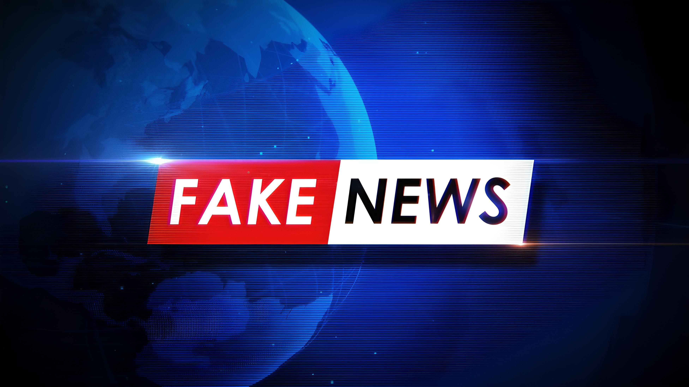

Origins of Fake News
Fake news has been around for centuries, often used as a tool for propaganda. Different regimes and interest groups have historically relied on manipulation strategies to influence public opinion. The advent of modern technology, especially the internet and social media, has significantly amplified the reach and impact of fake news.
Historically, fake news was disseminated through various means such as pamphlets, newspapers, and word-of-mouth. In the modern era, the internet has connected the world and made information incredibly accessible, which has led to the rapid spread of fake news.
With the advent of social media platforms, the spread of fake news has become even more pervasive. These platforms use algorithms designed to keep users engaged, often prioritizing sensational content over factual accuracy. This has made it easier for fake news to spread rapidly and reach a wide audience.
The rise of digital communication tools has also enabled the creation and dissemination of fake news on an unprecedented scale. Websites, blogs, and social media accounts can easily produce and share content without the traditional gatekeeping mechanisms of established media organizations.
